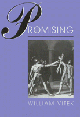

A contemporary philosopher takes an inventive look at the very human act of making promises
A contemporary philosopher takes an inventive look at the very human act of making promises


 A contemporary philosopher takes an inventive look at the very human act of making promises
A contemporary philosopher takes an inventive look at the very human act of making promises

|  |
PromisingWilliam Vitekcloth EAN: 978-1-56639-052-1 (ISBN: 1-56639-052-4) |
"This book is a solid philosophic achievement.... It draws nourishment from earlier theories, but is both novel and inventive. Especially worthwhile is Vitek's analysis of what makes for a practice: how practices arise, are reinforced, and change over time."
—George Graham, Professor of Philosophy, University of Alabama at Birmingham
William Vitek enlarges our understanding by treating the act of promising as a social practice and complex human experience. Citing engaging examples of promises made in everyday life, in extraordinary circumstances, and in literary works, Vitek grapples with the central paradox of promising: that human beings can intend a future to which they are largely blind.
Promising evaluates contemporary approaches to the topic by such philosophers as John Rawls, John Searle, Henry Sidgwick, P.S. Atiyah, and Michael Robbins but transcend their more limited focus on promissory obligation. Vitek's innovative approach moves beyond theories of language, ethics, and law to unveil a complex human activity subject to shifting interpretations and changes in nature.
"Vitek's volume is a rich tapestry of literary, social, psychological, and philosophical insights. Eminently readable, it is a model for how to make philosophy clear and accessible to a wide audience. Both undergraduates and scholars in the humanities and social sciences will find it enlightening."
—Kristin Shrader-Frechette, University of South Florida
"Vitek surveys a wide range of theories about promises, and tests their adequacy against some great cases from real life and George Eliot's novels. His sensitive and realistic account of the practice of promising as we actually engage in it shows up most previous philosophical accounts of promise, including my own, as crude over-simplifications or as legalistic half-truths. A fresh, informed, and illuminating approach to an important old topic."
—Annette Baier, University of Pittsburgh
"William Vitek has given us a thorough and clearly written account of that complex and uniquely human social practice, promising—of the conditions that make promising desirable, possible, and a significant addition to our moral lives.... All in all, an original and sensible contribution to moral philosophy."
—David Fate Norton, McGill University
Acknowledgments
1. The Paradox of Promise: Some Introductory Remarks
The Paradox •
The Literature •
Questions of Method •
Wanted: A Theory of Promise •
Promise as Practice
2. Approaches to Promise: The Contemporary Landscape
Promise as Institution •
Promise as Raised Expectations •
Promise as Evidence of a Previous Obligation •
Promise as Intuitively Clear •
Promise as Intention
3. Laced Up in Formulas: Contemporary Approaches Considered
Paving the Road with Good Intentions •
Intuitive Clarity and the Eye of the Beholder •
Insufficient Evidence •
Expect the Unexpected •
When Promising is Just a Game
4. Outlines of a Theory of Practice
Outline of the Theory •
The Theory Delineated
5. Promise as Practice
Characteristics of a Practice •
Precursors to the Practice Approach •
Earlier Criticisms Considered •
Criticisms of the Practice Approach
Postscript
Notes
Bibliography
Index
William Vitek is Assistant Professor of Philosophy at Clarkson University and the co-editor of Applying Philosophy.
Philosophy and Ethics
Psychology
© 2015 Temple University. All Rights Reserved. This page: http://www.temple.edu/tempress/titles/943_reg.html.